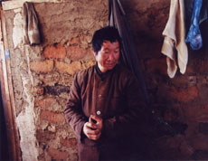

|
XIAO LI ZI
SURVIVAL SONG
Yu Guangyi | China 2008 | 90 min.
Material: DV
Format: MiniDV
Original language: Mandarin
Camera: Yu Guangyi
Sound: Yu Guangyi
Editing: Yu Guangyi, Wang Guosheng
Production: Yu Guangyi
Print/Sales: Fanhall Films
www.fanhall.com
Special Prize of the Jury, Tokyo Filmex, 2008 | Special Prize of the Jury, Dubai Film Festival 2008 | Red Chameleon, Cinema Digital Film Festival, Seoul 2009 | Best Documentary, Humanitarian Award, Hongkong Film Festival 2009
German Premiere
A sacked forest ranger survives as a hunter gatherer in the snow-covered wilderness of northern China. He also tries to maintain his primitive yet fascinating tenant XiaoLi. Then the unstoppable industrialisation of China reaches this backwater and a large water reservoir is built close to Han's home to supply drinking water to nearby Harbin. In vain, the couple resist their enforced departure. The corrupt government plays an unexpected trump card and the family is forced to fall apart. Survival Song pays homage to the vulnerable, hard-working underclass of China who, while loyal to those less fortunate than themselves, are marginalised by progress.
Yu Guangyi, born in 1961 in Heilongjiang province in China, studied at the China Academy of Art in Hangzhou. In 2004 he started making idependent documentaries and won several awards with the two films he realised until now.
Films: Mu bang / Timber Gang (The Last Lumberjacks) 2007 | Xiao li zi (Survival Song) 2008
back
|